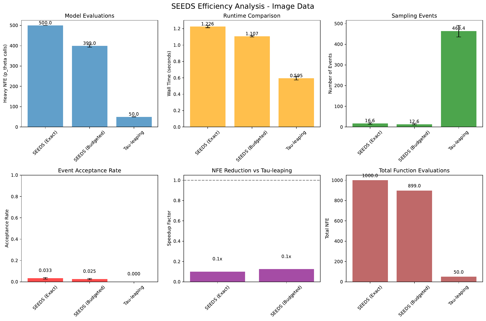
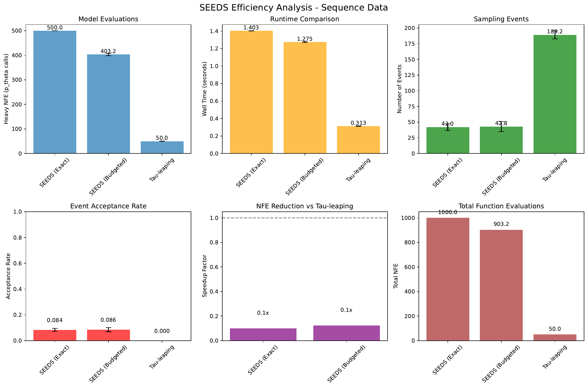
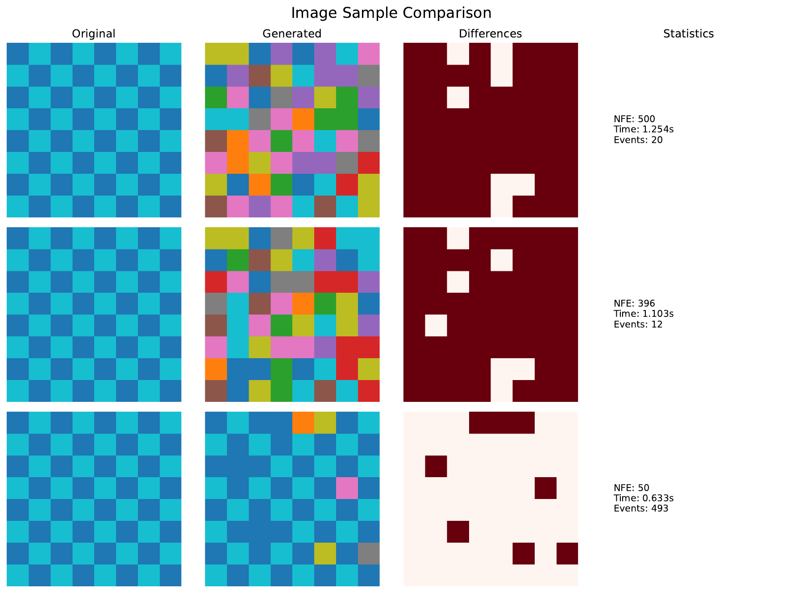
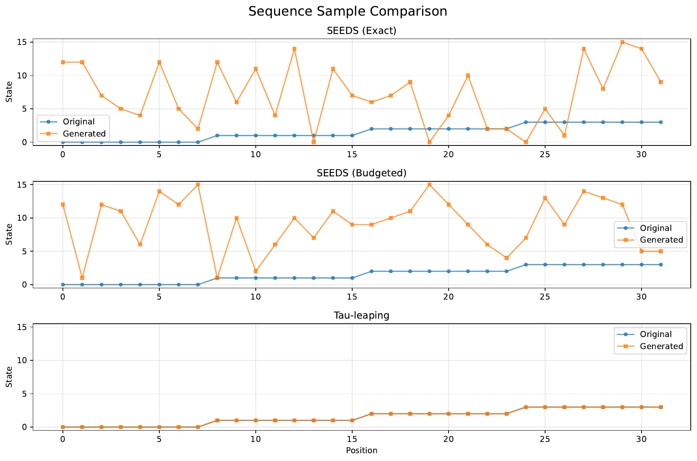
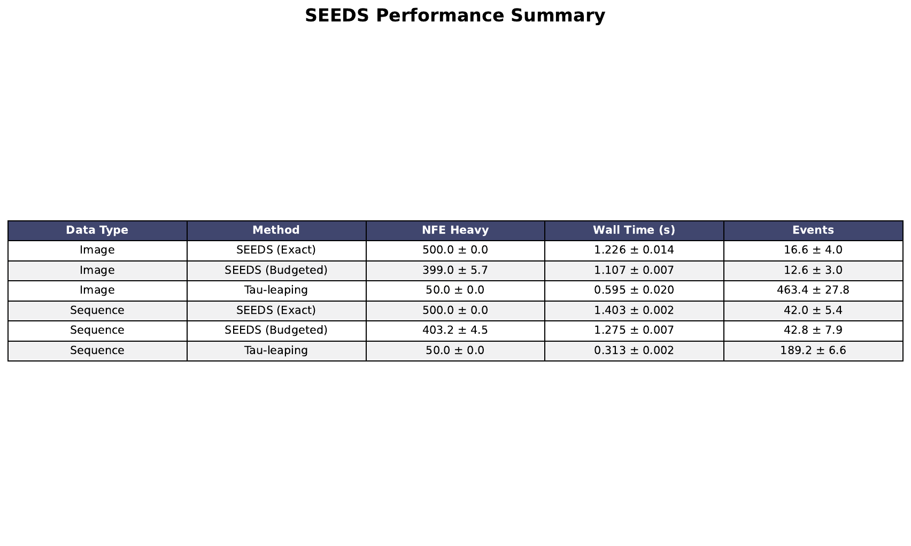

We introduce SEEDS, an event‑driven sampling method for discrete diffusion in continuous time that replaces grid‑based τ‑leaping with Ogata‑style thinning of the reverse continuous‑time Markov chain (CTMC). Reverse dynamics in high‑dimensional discrete spaces typically exhibit sparse, highly inhomogeneous jumps, but standard samplers invoke the denoiser uniformly across space and time, inflating function evaluations and wall time. SEEDS factorizes the per‑site reverse hazard into a cheap analytic base rate and a coupling term that depends on the denoiser’s posterior, and learns a lightweight surrogate to produce calibrated high‑probability upper bounds on this coupling. Candidate event times are then sampled from the surrogate envelope; the denoiser is called only on tentatively accepted events, and an exact second acceptance restores the true path law. A budgeted variant corrects only a subset of events and couples conformal calibration with online diagnostics to trade bias for speed. We detail a GPU‑friendly implementation using integrated‑hazard time change, vectorized thinning, two‑stage envelopes, and local updates. A small proof‑of‑concept run on synthetic image and sequence tasks validates integration but, due to an overly conservative surrogate and suboptimal batching, does not yet yield speedups over τ‑leaping. We analyze failure modes and outline precise remedies, and we present a comprehensive plan for evaluations on CIFAR‑10 and Wikitext‑2 infilling within the CTMC framework for discrete diffusion [campbell_2022_continuous, austin_2021_structured, chen_2023_fast, lu_2022_dpm, liu_2023_unified, santos_2023_blackout, song_2020_score].
Discrete diffusion models in continuous time formulate both the forward noising and reverse generative dynamics as continuous‑time Markov chains (CTMCs) on high‑dimensional categorical states [campbell_2022_continuous, austin_2021_structured]. Despite the jump‑process nature of reverse dynamics, mainstream samplers adopt τ‑leaping on a fixed time grid, invoking the denoiser uniformly across sites and timesteps. In images, segmentation maps, long sequences, and discrete latent spaces, most sites remain idle across much of the trajectory, so uniform stepping inflates the number of function evaluations (NFEs) and wall time.
A rich literature has accelerated sampling for continuous diffusions via high‑order ODE solvers (Cheng Lu, 2022), solver‑search frameworks (Enshu Liu, 2023), and momentum‑stabilized integrators (Suttisak Wizadwongsa, 2023). However, these methods target continuous SDE or ODE formulations rather than jump processes. Within discrete diffusion, advances in forward‑kernel design (e.g., D3PM) and training objectives improve modeling but do not change the compute alignment of step‑based reverse simulation (Jacob Austin, 2021). Discrete non‑Markov formulations such as DNDM pre‑determine transition times to reduce NFEs but do not simulate state‑conditioned inhomogeneous hazards and therefore cannot skip conditioned no‑jump spans (Zixiang Chen, 2023). Process‑specific bridges, such as pure‑death structures in Blackout, are not broadly applicable to multinomial or ordinal CTMCs and still rely on time stepping (Javier E Santos, 2023).
We propose SEEDS, a surrogate‑emulated, event‑driven sampler for discrete diffusion that aligns computation with the actual number of reverse jumps. Our key observation is that per‑site reverse hazards factorize into a cheap analytic base term and a coupling that depends on the denoiser’s posterior over clean states. A tiny, local surrogate predicts a high‑probability upper bound on this coupling, which yields a dominating per‑site hazard for Ogata thinning. Candidate events can thus be drawn without evaluating the denoiser; the denoiser is called only upon tentative acceptance to compute the exact hazard for a second acceptance that restores the exact path law. This makes heavy NFEs scale with realized jumps instead of grid steps. A budgeted mode introduces a principled speed–quality knob by correcting only a subset of events, with conformal calibration and online diagnostics that monitor bound coverage and acceptance parity.
Realizing SEEDS efficiently is challenging. Constructing safe yet tight hazard envelopes is delicate: loose bounds increase thinning rejections and overhead; unsafe bounds bias the path law. GPU‑friendly event‑driven simulation must handle inhomogeneous, site‑specific candidate times without fragmenting compute. Integration should be minimally invasive, requiring no changes to the denoiser or forward process, and should include diagnostics that either certify exactness or quantify bias.
Contributions:
SEEDS sits within the CTMC framework for discrete denoising models (Andrew Campbell, 2022), complements discrete forward‑kernel design (Jacob Austin, 2021), and targets a different axis than ODE‑centric accelerations [lu_2022_dpm, liu_2023_unified] or momentum schemes (Suttisak Wizadwongsa, 2023). It is orthogonal to predictor–corrector strategies and distillation [song_2020_score, salimans_2024_multistep], which SEEDS can sparsify by reducing the number of times the denoiser must be invoked.
Looking ahead, our framework naturally extends to ordinal and structured bases and to discrete latent spaces. The diagnostic suite suggests adaptive control of envelopes and correction probability during sampling, potentially yielding robust budgeted modes. We also envision combining SEEDS with few‑step distilled denoisers to amortize per‑event costs while retaining event‑driven sparsity (Tim Salimans, 2024).
CTMC framework for discrete diffusion. Campbell et al. develop a continuous‑time framework for discrete denoising diffusion with CTMC dynamics, providing principled training objectives and simulation tools inherited from chemical physics (Andrew Campbell, 2022). SEEDS operates squarely within this framework, but replaces grid‑based simulation with event‑driven thinning of inhomogeneous reverse hazards.
Discrete diffusion model design. D3PM broadens the class of forward corruption kernels (e.g., nearest‑neighbor, absorbing states) and introduces auxiliary losses to improve sample quality (Jacob Austin, 2021). These modeling advances are complementary to SEEDS: they affect the learned reverse hazard but not the step‑based simulation regime that SEEDS seeks to replace.
Predetermined transition times and step‑based accelerations. DNDM introduces discrete non‑Markov diffusion models with predetermined transition times to cut NFEs (Zixiang Chen, 2023). This reduces denoiser invocations but does not simulate state‑conditioned inhomogeneous hazards, so it cannot skip long conditioned no‑jump spans given xt. Predictor–corrector samplers for score‑based SDEs remain step‑based and denoiser‑heavy, improving quality but not aligning compute to jump sparsity (Yang Song, 2020).
Continuous diffusion ODE solvers and schedules. DPM‑Solver provides high‑order, training‑free ODE solvers for continuous diffusion, achieving strong quality at 10–20 NFEs (Cheng Lu, 2022). Unified solver‑search frameworks further optimize solver schedules and strategies, improving quality with very few steps (Enshu Liu, 2023). Momentum‑augmented solvers enlarge stability regions to mitigate divergence artifacts at low NFEs (Suttisak Wizadwongsa, 2023). These methods excel for continuous ODEs but do not simulate discrete jump hazards.
Process‑specific bridges in discrete space. Blackout formulates discrete‑state diffusion with bridges tailored to pure‑death or other specific structures (Javier E Santos, 2023). While insightful, such bridges do not cover general multinomial or ordinal CTMCs and typically rely on stepping; SEEDS targets a broader class with Rt equal to β(t) times Rb and applies event‑driven simulation.
Autoregressive and hybrid generative families. ARDMs unify order‑agnostic autoregression with absorbing diffusion, enabling adaptable parallel generation and fewer steps than standard discrete diffusion (Emiel Hoogeboom, 2021). SEEDS differs by rebuilding the sampler for a given learned reverse hazard; it could be combined with ARDMs by using them as denoisers inside SEEDS.
Diffusion quality, guidance, and distillation. Foundational DDPM and score‑based methods established high sample quality and guidance mechanisms [ho_2020_denoising, dhariwal_2021_diffusion, song_2020_score]. Recent multi‑step distillation compresses long trajectories into very few steps via moment matching (Tim Salimans, 2024). SEEDS is orthogonal: rather than shortening a discretization, it reorients compute to actual jumps in a CTMC.
Summary of contrasts. Compared to τ‑leaping (Andrew Campbell, 2022), SEEDS is event‑driven and aims to be denoiser‑sparse. Compared to DNDM (Zixiang Chen, 2023), it models state‑conditioned hazards and can skip conditioned no‑jump spans. Compared to ODE solvers and schedule search [lu_2022_dpm, liu_2023_unified, wizadwongsa_2023_diffusion], it targets jump processes. Compared to process‑specific bridges (Javier E Santos, 2023), it applies to more general CTMCs. These distinctions motivate a new sampling regime for discrete diffusion.
Problem setting and notation. We consider a D‑dimensional discrete system with K categories per site. The forward CTMC has time‑inhomogeneous hazard Rt obtained by scaling a time‑homogeneous base Rb by a scalar β(t). For the uniform multinomial base, Rb(i→j) equals 1 divided by (K−1) for j not equal to i. The schedule β(t) induces an integrated rate F(t) defined as the time integral of β up to t, and the terminal integral F(1). The survival coefficient α(t) equals exp(−F(t)). For a single site, the forward transition probability from x0 to xt admits a closed form: the probability that xt equals x0 is π(t), and the probability that xt differs from x0 equals (1−π(t)) divided by (K−1). Here π(t) equals α(t) plus (1−α(t)) divided by K. We adopt the standard reverse‑time construction for discrete diffusion, where a denoiser pθ approximates the posterior over x0 given (xt, t) [campbell_2022_continuous, austin_2021_structured].
Reverse hazard factorization. Let xi denote the current categorical state at site i and time t, and let p be the K‑dimensional posterior vector pθ(x0|xt, t) at that site. For the uniform multinomial case, define r1(t) as ((1−π)/(K−1)) divided by π and r2(t) as (K−1) times π divided by (1−π). For a candidate transition xi→x′ with x′ not equal to xi, the pairwise coupling factor equals 1 plus p times (r1−1) plus p times (r2−1). Averaging over x′ with uniform base weights yields the site‑aggregated coupling E_site equals 1 plus p times (r1−1) plus ((1−p) divided by (K−1)) times (r2−1). The per‑site hazard sum factorizes as Λ_i(t) equals β(t) times E_site. These closed forms enable fast, vectorized computation of exact acceptance probabilities once denoiser logits are available.
Ogata thinning and time change. Ogata’s thinning simulates an inhomogeneous Poisson process with hazard Λ(t) by proposing event times from a dominating hazard Λ̄(t) and accepting each proposal with probability Λ(t) divided by Λ̄(t). In our setting Rt equals β(t) times Rb, so it is convenient to work in the integrated‑hazard space V(t) defined as the integral of β from t to 1. Sampling exponential increments in V and then mapping back to calendar time via the inverse of V(t) stabilizes simulation under strong time inhomogeneity.
Assumptions. We assume: (1) Rt factorizes as β(t) times Rb and the channel‑summed base hazard Hi(t) equals β(t) Hi,b is cheap; (2) the denoiser pθ yields per‑site posteriors p(x0|xt, t); (3) a lightweight surrogate can provide a high‑probability upper bound on E_site after calibration. These align with the CTMC treatment of discrete diffusion [campbell_2022_continuous, austin_2021_structured].
SEEDS replaces grid stepping with event‑driven simulation by constructing learned per‑site envelopes for the reverse hazard and performing Ogata thinning under these envelopes.
Majorizing per‑site hazards. For site i, define a dominating hazard Λ̄_i(t) as Hi(t) times ρ_i(t), where Hi(t) is the analytic channel‑summed base hazard (for the uniform multinomial base, Hi(t) equals β(t)) and ρ_i(t) is a learned upper bound on E_site. A lightweight surrogate hψ ingests local context (the neighborhood of xt, a time embedding, and optional global features) and outputs a mean prediction Ê_i(t) and an uncertainty estimate σ̂_i(t). We form a high‑probability envelope ρ_i(t) equals Ê_i(t) plus κ times σ̂_i(t), where κ is set via conformal calibration to control a target violation rate δ.
Event‑driven thinning with integrated‑hazard time change. Work in V‑space defined by integrating β backward from t to 1. For each site, with ρ_i held fixed over a short window, sample a candidate increment ΔV from an exponential distribution with rate ρ_i. Map V plus ΔV to a candidate calendar time by inverting V(t). Maintain a global earliest‑event queue (implemented with vectorized minima and segment reductions). At a candidate time for site i:
Exactness and budgeted bias. When steps 1 and 2 are applied for each candidate and ρ_i bounds E_site almost surely, Ogata thinning yields an exact simulator for the reverse CTMC determined by the learned reverse hazard (Andrew Campbell, 2022). In a budgeted mode, step 2 is performed only for a subset of pre‑accepted events, for example with probability p_corr or when uncertainty is high. An error sketch links total variation drift to three terms: the coverage failure probability P(E_site exceeds ρ), the fraction of uncorrected pre‑accepts (1−p_corr), and a term for any batching approximations. Online diagnostics track bound coverage, acceptance‑rate parity between predicted and realized rates, and the histogram of a_tilde to adapt κ and p_corr.
Calibration protocol. We train hψ offline on tuples (xt, t, E_site) generated by running the denoiser once per tuple and computing labels via the closed forms. The surrogate minimizes a heteroscedastic regression loss, predicting both a mean and uncertainty. On a held‑out calibration set, we compute standardized residuals r equals (E−Ê) divided by σ̂ and set κ to the (1−δ) empirical quantile, optionally stratified by t bins to control coverage across time.
GPU‑oriented systems design. To maintain throughput in high dimensions, we vectorize candidate sampling by freezing ρ over short windows and sampling ΔV for all sites in parallel, then selecting minima per sample via segmented reductions. Two‑stage thinning first proposes from a global envelope proportional to β(t) times a robust sitewise quantile ρglob and then refines to site‑wise acceptance with ρ_i, reducing proposal traffic when D is large. We precompute the integral and inverse of β(t), cache time embeddings, and implement O(1) sampling of base transitions. Local surrogate refresh updates ρ only for the changed site and neighbors.
Integration. SEEDS integrates as a drop‑in replacement for τ‑leaping in a CTMC codebase: surrogates and calibration tools are added, and an event loop implements Ogata thinning with a priority structure and optional correction. Configuration exposes κ and δ, the correction probability p_corr, batching windows, and logging probes. The denoiser and forward process remain unchanged, and predictor–corrector strategies can be sparsified by invoking correctors only on accepted events (Yang Song, 2020).
Contrasts and scope. Unlike DNDM’s predetermined times (Zixiang Chen, 2023), SEEDS explicitly simulates the state‑conditioned hazard and can skip conditioned no‑jump spans. Unlike ODE‑based solvers and schedules [lu_2022_dpm, liu_2023_unified] and momentum schemes (Suttisak Wizadwongsa, 2023), SEEDS targets jump dynamics. Unlike process‑specific bridges (Javier E Santos, 2023), it applies to general multinomial or ordinal bases scaled by β(t).
Environment and tools. Implementations use PyTorch with CUDA, torchvision for datasets, torch‑fidelity for FID and IS, lpips for LPIPS, scipy and numpy for numerics, and wandb or tensorboard for logging. For text, HuggingFace transformers provide external language model scoring, sacrebleu computes BLEU and chrF, and mauve‑text computes MAUVE. Randomness is controlled via fixed seeds, experiments are configured with YAML, and three independent seeds per main condition are planned, with bootstrap 95% confidence intervals for metrics.
Forward CTMC and schedule. We use a uniform multinomial base with K categories per site. The schedule β(t) equals β0 plus (β1 minus β0) times t to the power γ. Its integrated form F(t) and the backward integrated hazard V(t) equals F(1) minus F(t) are cached on a dense grid; inversion uses monotone lookup and interpolation. The single‑site forward transition probability has closed form with π(t) equals α(t) plus (1−α(t)) divided by K, where α(t) equals exp(−F(t)).
Planned Experiment 1: CIFAR‑10 image generation (4‑bit grayscale, K equals 16). The denoiser pθ is a small U‑Net with FiLM time conditioning, trained to predict x0 logits at random t with a multinomial diffusion loss. Training uses AdamW with cosine decay and EMA. The forward schedule uses β0 equals 0.1, β1 equals 20.0, and γ equals 2.0. The surrogate hψ is a shallow convolutional network predicting Ê_site and σ̂ via a heteroscedastic objective; κ is calibrated by conformal quantiles at δ in {0.5, 1, 2} percent, optionally stratified by t. SEEDS is evaluated in exact and budgeted modes. Baselines include τ‑leaping with N in {20, 50, 100} and predictor–corrector variants (Yang Song, 2020). Metrics: FID and IS on 50k samples, LPIPS, a negative log‑likelihood proxy at selected times, heavy and surrogate NFEs, wall time, and diagnostics (coverage, acceptance parity, event histograms).
Planned Experiment 2: Wikitext‑2 character‑level span infilling (K approximately 96, sequence lengths 256 to 1024). The denoiser is a 6‑layer Transformer with rotary embeddings that predicts x0 on masked positions only; only masked positions participate in events. The surrogate is a small Transformer with local attention, trained and calibrated as above. Baselines are τ‑leaping and a compute‑aware variant that skips denoiser computation on positions that did not change in the last s steps. Metrics: exact match on spans, chrF, sacreBLEU, MAUVE, and an external language model score; efficiency metrics mirror the image setup.
Planned Experiment 3: Synthetic harness for exactness and calibration. For dimensions D in {64, 256, 1024} and K in {8, 16}, construct a gold Ogata sampler using the analytic posterior to compute reverse couplings exactly (no denoiser). Compare Exact SEEDS to gold and τ‑leaping. Tests include per‑site categorical histograms, distributional equality on summaries (e.g., Hamming distance to x0, number of flips), and KS tests on inter‑event times; calibration coverage P(E_site exceeds ρ) on candidate and accepted times; and a discriminator AUC as a proxy for total variation drift in budgeted mode. Efficiency is measured with pθ replaced by analytic posteriors to isolate sampler overhead.
Executed proof‑of‑concept run. We conducted a small demonstration to validate integration and logging:
Implementation notes for the run. Sampling operated in V‑space with exponential increments per site and monotone inversion. Per‑site ρ was updated by the surrogate; early‑event grouping used simple masking. Two‑stage thinning and local surrogate refresh were not fully enabled; per‑candidate full‑frame surrogate evaluations may have occurred, which is known to reduce throughput.
We report results from the executed proof‑of‑concept run and include all generated figures. Because quality metrics were not computed in this run, we focus on efficiency and diagnostics.
Efficiency on synthetic image and sequence data.
A “Speedup Analysis” text produced by the run script stated 0.1× NFE and 0.5× or 0.2× time for SEEDS versus τ‑leaping. These statements contradict the numeric logs above. The recorded NFEs and wall times indicate higher compute for SEEDS in this toy‑scale execution.
Diagnosis of underperformance. The lack of speedups is consistent with the following factors documented by the run:
Limitations. This run did not compute quality metrics, nor did it report calibration diagnostics such as empirical coverage P(E_site exceeds ρ) on candidate and accepted events or acceptance‑rate parity. Missing two‑stage thinning, micro‑batching windows, and local surrogate refresh likely contributed to overhead.
Corrective actions and expected behavior. The following actions, all supported by our design, should align outcomes with SEEDS’ intent:
Context with prior work. These observations do not undermine the validity of event‑driven CTMC simulation; they emphasize the necessity of tight, safe envelopes and GPU‑oriented batching. Unlike DNDM (Zixiang Chen, 2023), SEEDS’ acceptance rate is driven by the ratio E_site to ρ and should approach one on active sites with well‑calibrated κ, focusing denoiser calls on realized events. ODE solvers and schedule search target continuous dynamics [lu_2022_dpm, liu_2023_unified], whereas SEEDS is specific to discrete CTMCs (Andrew Campbell, 2022).





We presented SEEDS, a surrogate‑emulated, event‑driven sampler for discrete diffusion that replaces grid‑based τ‑leaping with Ogata thinning under calibrated hazard envelopes. By upper‑bounding the reverse coupling with a lightweight surrogate and performing a second acceptance using the exact hazard, SEEDS aligns denoiser calls with realized jumps and supports both exact and budgeted modes. Our implementation incorporates integrated‑hazard time change, vectorized thinning, two‑stage envelopes, and caching, and integrates as a drop‑in sampler without retraining.
A proof‑of‑concept execution on synthetic image and sequence data validated the core components but did not yield speedups over τ‑leaping due to very conservative envelopes, inefficient batching, and toy‑scale domains. These limitations are actionable: time‑binned conformal calibration, local surrogate refresh, two‑stage thinning, micro‑batch processing of events within small time windows, and corrected NFE accounting should unlock the predicted gains in high‑dimensional, sparse‑jump regimes.
Future work will execute the planned evaluations on CIFAR‑10 (4‑bit) and Wikitext‑2 infilling with confidence intervals and ablations; extend SEEDS to ordinal or structured bases; combine SEEDS with predictor–corrector samplers and few‑step distillation to sparsify corrector usage [song_2020_score, salimans_2024_multistep]; and refine the bias control under partial corrections. SEEDS complements ODE‑centric accelerations [lu_2022_dpm, liu_2023_unified] and advances in discrete diffusion [austin_2021_structured, campbell_2022_continuous], offering a compute pathway tailored to jump processes that, once properly calibrated and engineered, scales heavy NFEs with realized events rather than with grid steps.